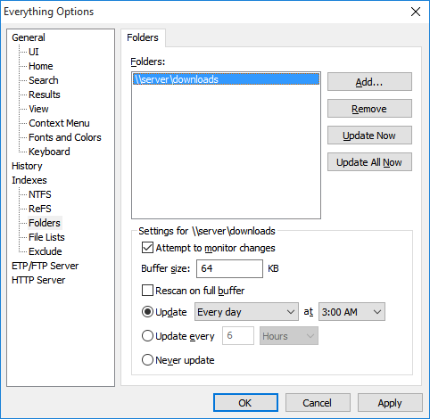

Folder indexing allows Everything to include any file system folder in the Everything index.
Indexed folders can go offline and remain in the Everything index.
For example, with folder indexing you can index:
Network shares or mapped network drives.
FAT32 and other volumes.
Any physical folder.

No, folder indexing does not require administrative privileges or the Everything service.
Folder indexing uses the same approach as the Windows search.
This can be a lot slower than NTFS indexing.
Everything can take a couple minutes to scan a folder and all its subfolders and files.
In Everything, from the Tools menu, click Options.
Click the Folders tab.
Click Add....
Select a folder to add to the Everything index.
Click OK.
Click OK.
In Everything, from the Tools menu, click Options.
Click the Folders tab.
Click Add....
Select the network share to add to the Everything index, for example:
\\server\share
Click OK.
Click OK.
In Everything, from the Tools menu, click Options.
Click the Folders tab.
Click Add....
Select the mapped network drive.
Click OK.
Click OK.
If network drives are not listed in Everything, please try running Everything as a standard user:
In Everything, from the Tools menu, click Options.
Click the General tab on the left.
Check Everything service.
Uncheck Run as administrator.
Click OK.
Restart Everything (right click the Everything tray icon and click Exit).
To prevent Everything from rescanning folders on startup:
In Everything, type in the following search and press ENTER:
Folder rescanning will occur at the next scheduled time.
Almost all changes are detected.
Changes can be missed if too many occur in a short time.
To rebuild the folder index when too many changes occur in a short time:
In Everything, from the Tools menu, click Options.
Click the Folders tab.
Select a folder.
Check Rescan on full buffer.
Everything can schedule an update time or update interval to rescan the entire folder for changes that might have been missed.
To customize the update time or update interval:
In Everything, from the Tools menu, click Options.
Click the Folders tab.
Select a folder.
Choose one of the options below:
Update each day, or weekly on a specific day, at a specific time.
Update periodically in the specified hours or minutes.
Never update.
To manually update all folder indexes:
In Everything, from the Tools menu, click Options.
Click the Folders tab.
Click Rescan All Now.
Click OK.
To manually update a folder index:
In Everything, from the Tools menu, click Options.
Click the Folders tab.
Select the folder to update and click Rescan Now.
Click OK.
The folder index will remain unchanged.
However, forcing a index rebuild will show the folder as empty.
Everything will continue to re-scan the folder at the specified update time or update interval and only update the folder when it is online.
Displaying icons and file information of offline folders can take several seconds to time-out.
You can press F5 to refresh this cache when the folder is back online.